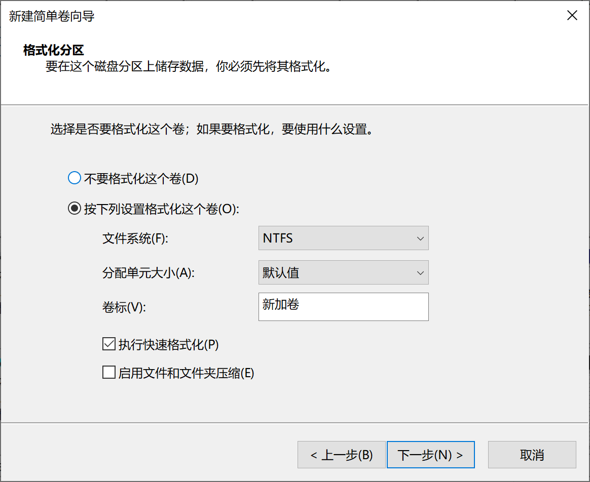
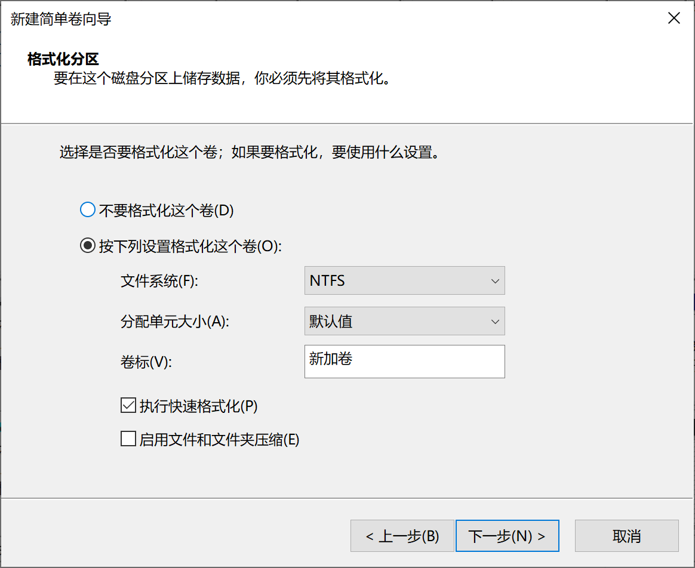
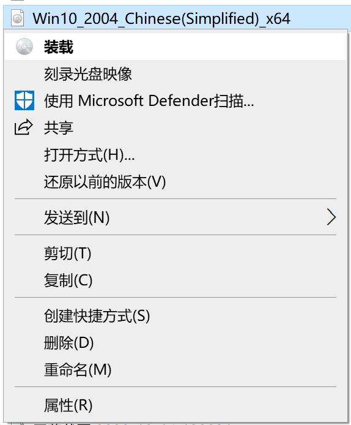
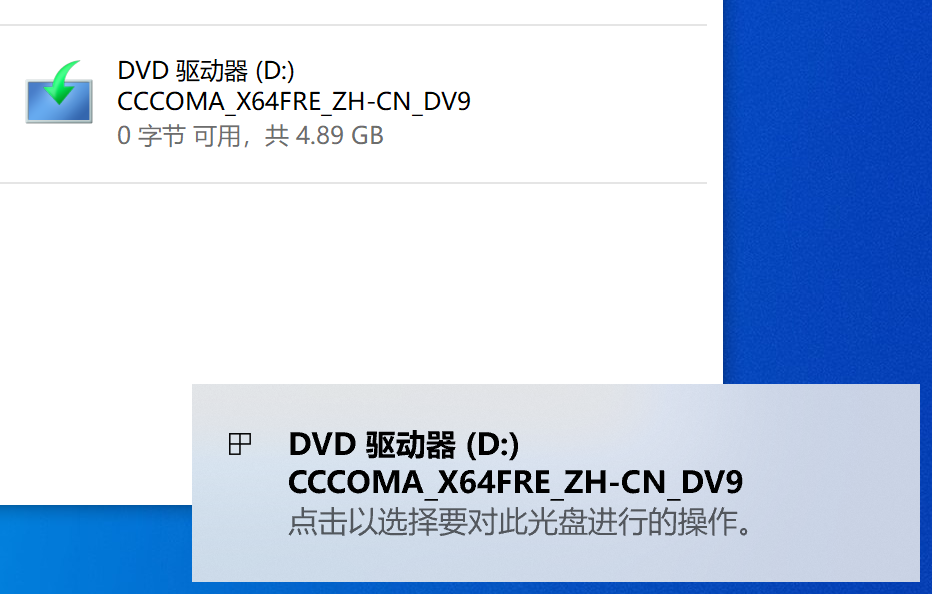
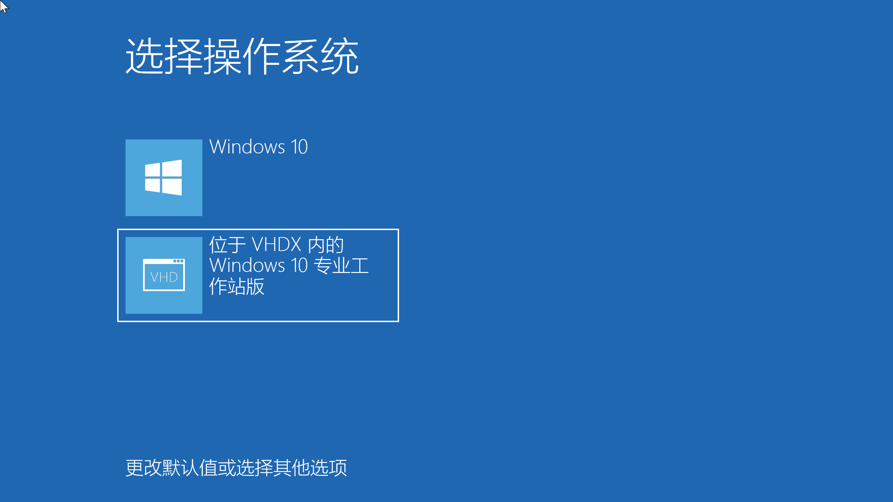
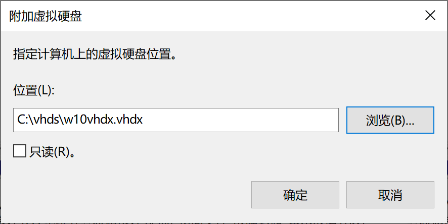
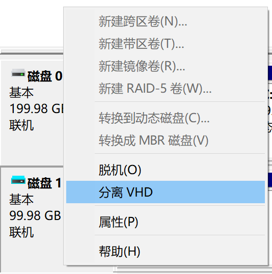
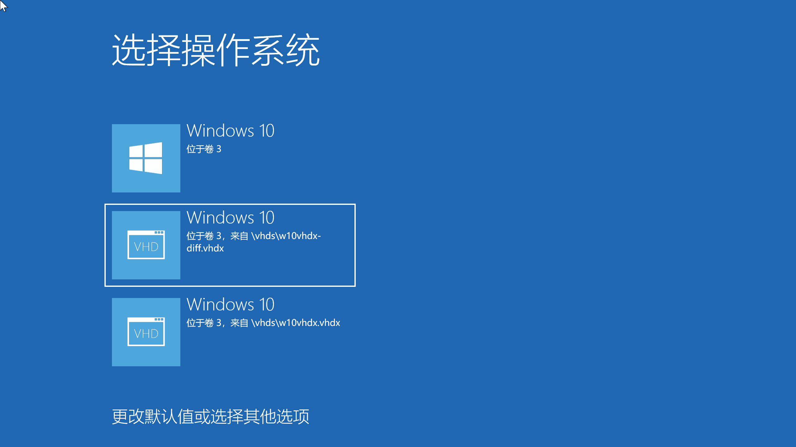

使用 VHD(X) 部署原生多系统 ^
这是一篇进阶文章。 为了保证简洁，本文会讲解更少的基础操作，而更注重细节和原理；尽管如此，noarch 也会尽量解释清楚每一个必要的步骤。
在阅读本文之前，你应该已经了解了监考软件，虚拟机，虚拟磁盘以及 Windows 启动的基本概念，并且熟悉 Windows 命令行的基本操作。如果你还没有，点击前面的链接来了解。
noarch 的碎碎念
这篇文章开始编写时 (2020-10), 北美的 COVID-19 疫情依然水深火热：美国依然以每天 5w+ 确诊病例 稳 步 增 长 ，加拿大部分省份则见明显反弹。
你可能会疑惑：为什么 noarch 要在一篇 IT 文章上讲 COVID-19?
原因是 COVID-19 “使得间谍软件合法化，并且学校强迫让学生安装他们” (Forbes, EFF).
简单来说：因为 COVID-19 疫情，学生需要完全上网课，同时也要在网上考试；而“为了防止考试作弊”，学校强制学生在考试时安装“监考软件”。
幸运的是，noarch 所在的高中依然部分开放，考试照常在学校进行，不需要面对监考软件。然而最近有大学的朋友给我发了这张图：
这张图里，她尝试在 VMware Fusion 虚拟机里运行监考软件；意料之中的是，监考软件检测到了虚拟机的存在并且拒绝启动。
如果你不知道对客户机隐藏虚拟化状态的方法，或是 noarch 将要介绍的使用 VHD 原生启动 Windows, 在 due date 的催促下，你可能就高挂白旗，在日常使用的系统乖乖装上了监考软件。
目标和限制
软件可以通过多种方法检测自己是否在虚拟机内运行。
例如 al-khaser 就是一个检测虚拟机 / 调试器的 demo. 这个 demo 会通过检测 CPU 是否虚拟，检测虚拟设备及其驱动的存在等方法判断虚拟机的存在。
要绕过所有这些虚拟机检测非常复杂；因此人们也用多系统来隔离自己的软件，身份和数据。
传统的多系统虽然不是很复杂，但非常麻烦，也不够灵活：你需要给磁盘分区；根据你启动方式的不同，你需要用不同方法配置启动引导器...
微软在 Windows 7 及以后提供的虚拟磁盘启动功能则是在虚拟机和多系统之间的一个诡异“缝合怪”。它有着虚拟磁盘的便利性（快照功能）以及原生多系统的性能优势，并且不常被检测为虚拟机。
使用虚拟磁盘启动时，Windows 启动引导器会挂载虚拟磁盘并启动虚拟磁盘内的 Windows; 除此之外，虚拟磁盘内的 Windows 会直接使用所有物理硬件。 如果你接触过传统多系统，下面是虚拟磁盘启动和传统多系统的一些区别：
相比传统多系统
- 因为基于虚拟磁盘，能像虚拟机一样创建“快照”
- 无法“休眠”（暂停到磁盘）
- 但“睡眠”（暂停到内存）依然可用
- 无法更新 Windows 的大版本（例如 Windows 10 1909 升级到 2004）
- 位于虚拟磁盘内的 Windows 必须是专业版以上（专业版(N)，企业版(N)，教育版(N)...）
相比虚拟机
- 能直接利用物理硬件，性能损失少
- 较少被检测为“虚拟机”
- 无法控制软件对硬件的访问
- 无法完全控制软件对你“主系统”数据的访问
其它限制
- 用来启动的虚拟磁盘，以及存储这个虚拟磁盘文件的物理磁盘不能使用“动态分区”（一个微软专有的分区表格式）
- 虚拟磁盘文件不能位于一个 Samba 分享（网络卷）上
- 存储这个虚拟磁盘文件的物理卷不能使用 BitLocker 加密
- 存储这个虚拟磁盘文件的物理卷必须是 NTFS 或 exFAT (Windows 10 1809+) 格式
别怕，如果你没有听说过上述的功能，那么你大概率不需要这些功能，因此虚拟磁盘多系统非常适合你；如果你是上述功能的用户，你知道如何应对 ;)
先决条件
你需要准备：
- 一个运行着 Windows 10 的 PC
- Windows 10 on ARM 和 Windows 10 S 不支持多启动
- 至少 20GiB 的磁盘空闲空间，noarch 建议至少保留 60 GiB 以便安装应用
- 不按流量计费的网络，因为你将要下载约 5GiB 的 Windows 安装镜像
- 该 PC 的“管理员” (Administrators) 权限
- 约 20 分钟的空闲时间
我们开始吧！
下载 Windows 安装镜像
在虚拟磁盘里安装 Windows 就像在虚拟机里安装 Windows. 首先你需要准备一个 iso 格式的 Windows 安装镜像。
你可以通过多种方法向微软获得 Windows 安装镜像，例如“媒体创建工具”：
或者只为非 Windows 电脑开放的直接 iso 下载。

这两种方式 noarch 就不在此赘述；你可以在等待下载的同时进行下一步。
创建虚拟磁盘文件
接下来你需要创建一个虚拟磁盘 vhdx 文件。
右键点击 键，或是按 + X，在弹出的菜单中选择“磁盘管理”：
如果你当前在使用一个标准账户，你需要以管理员打开
PowerShell/CMD然后从那运行diskmgmt.
要创建一个虚拟磁盘，点击菜单栏的“操作”- “创建 VHD”：

然后在弹出的窗口里选择 VHDX - 动态扩展，指定 VHD 的最大大小，然后选择虚拟磁盘文件的存储位置。
VHD的最大大小不能超过物理磁盘当前可用的空间大小。
如果你打算在虚拟磁盘里安装的是 Windows 7, 因为 Windows 7 无法从
VHDX启动，你应该使用VHD作为虚拟磁盘格式。
填写完成后点击“确定”，你就可以在“磁盘管理”中看到新添加的虚拟磁盘了：

就像物理磁盘一样，你也需要初始化一个虚拟磁盘：为其创建一个分区表，然后创建一个分区。
右击左侧的“没有初始化”，选择“初始化磁盘”；然后在弹出的窗口点击“确定”。

这步做完后你就得到了一个准备被分区的磁盘：

接下来你就可以按照正常的方法给这个虚拟磁盘分区。noarch 在这里只给虚拟磁盘创建一个 NTFS 分区：
 

在“新建简单卷向导”里一路点击“下一步”，你就得到了一个可用的虚拟磁盘分区。

虚拟磁盘的最大大小不能超过当前磁盘可用空间的大小。这是因为虚拟磁盘内的 Windows 在启动时会为了防止磁盘写入错误，将自己扩展到虚拟磁盘的最大大小，并在关机时将自己缩小到实际数据量的大小。
“解压” Windows
接下来是本文最重要的一步：将 Windows 解压到虚拟磁盘里。
这是 noarch 想要写这篇文章的主要原因：noarch 找到的描述在虚拟磁盘里安装 Windows 的现有中文文章，均使用某种第三方工具或脚本将 Windows “解压”到目标虚拟磁盘。这些工具多数只为对应的教程所写，没有被长期维护，不够可靠。
实际上你可以使用 Windows 自带的工具 DISM 简单地“解压” Windows 安装镜像。
首先，在文件资源管理器里装载你刚刚下载的 Windows 安装光盘：
然后你就可以在“此电脑”里看到“一个新光盘的插入”。

你可以右击然后“打开”（不是“从媒体安装或运行程序”）刚刚装载的 iso 镜像。
如果你是直接下载的 iso, 你可以在装载的“光盘”里找到 sources\install.wim.
如果你是使用“媒体创建工具”创建的
iso, 这个文件则会是install.esd而不是install.wim.如果你的是
install.esd, 请将下面所有命令中install.wim替换成install.esd.

+ X, 用管理员权限打开 Windows PowerShell 或 CMD:

我们接下来会用 DISM 来查看和“解压”这个镜像。
install.wim 是一个 WinImage 镜像；WinImage 是微软在 Windows Vista 发布时推出的一个镜像格式。
其一个重要特性是可以在一个镜像中差分多个子镜像，而不显著增加主镜像的大小。因此，它取代了 Windows XP 及之前的文件复制，专门用来包装 Windows, 使得多个不同的 Windows 版本 (edition) 可以被包装在一个安装光盘里。
同样地，我们下载的 Windows 10 安装镜像中的 WinImage 镜像也包含多个版本；你在“解压”时需要选择一个 Windows 版本，在 PowerShell 里运行这个命令来列出 install.wim 的所有子镜像：
dism /Get-ImageInfo /ImageFile:[你的 install.wim 位置]
你需要将上方的
[你的 install.wim 位置]替换成你install.wim的实际位置。同样你也需要替换所有后续使用方括号[]引用的数值。
这是 noarch 的运行结果：
PS C:\Windows\system32> dism /Get-ImageInfo /ImageFile:D:\sources\install.wim
部署映像服务和管理工具
版本: 10.0.19041.329
映像详细信息: D:\sources\install.wim
索引: 1
名称: Windows 10 家庭版
描述: Windows 10 家庭版
大小: 14,691,877,788 字节
索引: 2
名称: Windows 10 家庭单语言版
描述: Windows 10 家庭单语言版
大小: 14,691,375,165 字节
索引: 3
名称: Windows 10 教育版
描述: Windows 10 教育版
大小: 14,935,497,806 字节
索引: 4
名称: Windows 10 专业版
描述: Windows 10 专业版
大小: 14,935,765,881 字节
索引: 5
名称: Windows 10 专业教育版
描述: Windows 10 专业教育版
大小: 14,935,436,224 字节
索引: 6
名称: Windows 10 专业工作站版
描述: Windows 10 专业工作站版
大小: 14,935,467,015 字节
操作成功完成。
在运行完上述命令后请选择 困难 一个 Windows 版本，并记住它的“索引”号。
noarch 在这里选择 “Windows 10 专业工作站版”子镜像，其“索引”是6.
关于 Windows 10 各个版本 (edition) 的区别，请见 https://www.microsoft.com/zh-cn/WindowsForBusiness/Compare.
记住索引后，你可以用一行命令将 Windows “解压”到虚拟磁盘内：
dism /Apply-Image /ImageFile:[你的 install.wim 位置] /Index:[你选择的版本“索引”] /ApplyDir:[你虚拟磁盘的盘符] /Verify /Check-Integrity
上方命令选项的含义：
/Apply-Image: 应用（“解压”）指定的镜像/ImageFile:: 指定要处理的镜像位置/Index:: 指定子镜像的索引
/ApplyDir:: 指定“解压”的目标目录/Verify: 在复制后验证结果正确/Check-Integrity: 验证镜像的完整性
在上方的
DISM命令里，许多选项具有从属关系。例如你不能将/Index:移动到/ApplyDir后面，因为/Index:从属于/ImageFile:. 如果你运行时出错了，建议你检查一下选项的顺序。
在 noarch 的例子里，是执行这个命令：
dism /Apply-Image /ImageFile:D:\sources\install.wim /Index:6 /ApplyDir:E: /Verify /Check-Integrity
运行这行命令，稍等片刻，DISM 就会开始将 Windows “解压”到虚拟磁盘：
PS C:\Windows\system32> DISM /Apply-Image /ImageFile:D:\sources\install.wim /Index:6 /ApplyDir:E: /Verify /Check-Integrity
部署映像服务和管理工具
版本: 10.0.19041.572
正在应用映像
[================ 28.0% ]
根据你的 PC 配置，“解压”的过程会消耗 5 ~ 20 分钟。DISM 会在完成后返回：
部署映像服务和管理工具
版本: 10.0.19041.572
正在应用映像
[==========================100.0%==========================]
操作成功完成。
到此，我们安装 Windows 的过程已经完成大半了。下面我们将要为新安装的 Windows 添加一个启动项，并且重启进入新的 Windows 安装进行配置。
配置启动项
同样在管理员权限的 PowerShell 里，运行：
bcdboot [你虚拟磁盘的盘符:]\Windows
上方命令选项的含义：
/d: 保留目前的默认启动项，不将新启动项设置为默认；这会保证 Windows 启动引导器依然由安装在物理磁盘的 Windows 提供。/l zh-CN: 设置新添加的启动引导器语言为简体中文。bcdboot命令添加的启动项默认语言是美式英语en-us.- 如果你在安装一个繁体中文 Windows, 请使用
/l zh-TW.
- 如果你在安装一个繁体中文 Windows, 请使用
例如 noarch 的虚拟磁盘盘符为 E: , 这是我的运行结果：
PS C:\Windows\system32> bcdboot /d /l zh-CN E:\Windows
已成功创建启动文件。
这一步会将你在虚拟磁盘内的 Windows 添加到 BOOTMGR 的启动选项里。从现在起，你在开机时将需要选择进入安装在物理磁盘上的 Windows 或是虚拟磁盘上的 Windows.
理论上，这一步做完后，你就可以重启，然后选择新的 Windows 了；在启动时你会看到“选择操作系统”界面，其中含有 VHD 的就是你安装在虚拟磁盘内的 Windows.
重命名启动项
为了更好地区分虚拟和物理磁盘中的操作系统，你可能想给刚刚添加的启动项取一个不同的名字。要给启动项改名，你需要用到 bcdedit.
在 BOOTMGR 的启动项数据库里，每个启动项都有一个唯一的 UUID; 要对一个特定的启动项进行修改，你需要先获取它们的 UUID.
不添加任何选项运行 bcdedit 将会获取目前所有启动项的信息：
PS C:\Windows\system32> bcdedit
Windows 启动管理器
--------------------
标识符 {bootmgr}
device partition=\Device\HarddiskVolume1
path \EFI\Microsoft\Boot\bootmgfw.efi
description Windows Boot Manager
locale zh-CN
inherit {globalsettings}
default {current}
resumeobject {edd55b4c-0bc1-11eb-8106-a0043c6d1b90}
displayorder {edd55b4d-0bc1-11eb-8106-a0043c6d1b90}
{current}
toolsdisplayorder {memdiag}
timeout 30
Windows 启动加载器
-------------------
标识符 {edd55b4d-0bc1-11eb-8106-a0043c6d1b90}
device partition=E:
path \Windows\system32\winload.efi
description Windows 10
locale zh-CN
inherit {bootloadersettings}
isolatedcontext Yes
allowedinmemorysettings 0x15000075
osdevice partition=E:
systemroot \Windows
resumeobject {edd55b4c-0bc1-11eb-8106-a0043c6d1b90}
nx OptIn
bootmenupolicy Standard
Windows 启动加载器
-------------------
标识符 {current}
device partition=C:
path \Windows\system32\winload.efi
description Windows 10
locale zh-CN
inherit {bootloadersettings}
recoverysequence {edd55b42-0bc1-11eb-8106-a0043c6d1b90}
displaymessageoverride Recovery
recoveryenabled Yes
isolatedcontext Yes
allowedinmemorysettings 0x15000075
osdevice partition=C:
systemroot \Windows
resumeobject {edd55b40-0bc1-11eb-8106-a0043c6d1b90}
nx OptIn
bootmenupolicy Standard
在每个 "Windows 启动加载器" 下的 标识符 就是我们要用的 UUID.
device 行代表启动项所使用的设备；目前我们的虚拟磁盘依然在挂载状态，所以 device 会返回当前虚拟磁盘被挂载到的盘符。在 noarch 的例子里，它是 E:, 对应的 UUID 是 {edd55b4d-0bc1-11eb-8106-a0043c6d1b90}.
选中然后右击鼠标复制这个标识符，然后运行：
bcdedit /set "[你的启动项 UUID]" description "[启动项描述]"
因为
PowerShell与CMD对待字符串的方式不同， 在PowerShell里，启动项UUID以及描述需要用双引号"或单引号'括起来。
在 noarch 的例子里，这是我运行的实际命令以及结果：
PS C:\Windows\system32> bcdedit /set "{edd55b4d-0bc1-11eb-8106-a0043c6d1b90}" description "位于 VHDX 内的 Windows 10 专业工作站版"
操作成功完成。
操作完成后，你就可以重启进入新安装的 Windows 了。

配置新安装的 Windows
重启选择新安装的 Windows 后，Windows 可能会多重启几次；而这些重启依然会通过原系统的启动引导器进行，因此你需要在电脑前 坐和放宽 并且准备在启动菜单中选择虚拟磁盘内的 Windows 安装。
noarch 将不在此赘述 OOBE（开箱体验），详细的过程请看 OOBE 注意事项（未完成）。
激活
如果你在一台预装了正版 Windows 的机器上安装对应版本的 Windows（通常为 Windows 家庭单语言版），Windows 会读取主板固件内的数字证书自动激活。如果 Windows 没有自动激活，你需要购买一个 Windows 的授权。
因为法律原因（没错，求生欲挺强），noarch 将不描述使用 KMS 服务器激活的方法。
使用微软®软件正版授权 安全 稳定 声誉
安装驱动
进入 Windows 设置 -> 更新和安全 -> Windows 更新, 手动检查更新。Windows 会通过 Windows Update 自动安装关键的硬件驱动。
如果你要手动安装驱动，虚拟磁盘内的 Windows 在驱动安装上和直接在物理磁盘内安装基本无异。
卸载 (unmount) 物理分区
永远加密和备份高敏感性和珍贵的数据。 下面的方法只能避免常见的文件操作，并不能阻止专门为了盗取或摧毁已卸载磁盘内数据的恶意软件。
你应该不想这个系统内的应用读取你直接存储在物理磁盘内的文件。然而 Windows 会自动挂载所有检测到的磁盘和分区，使得所有的应用都能访问其中的内容：
要卸载 (unmount, 取消装载，而不是移除) 物理磁盘，你同样需要使用磁盘管理 diskmgmt.

右击你要卸载的分区，选择“更改驱动器号和路径”：
在弹出的窗口里选中当前的驱动器号，然后“删除”。同时你需要两次确认操作：

对所有自动装载的物理分区重复上述操作，你就能卸载所有想隔离的物理分区了。你甚至可以卸载包含着当前虚拟磁盘文件的物理分区，而 Windows 依然能访问这个虚拟磁盘文件。
虚拟内存
如果你在上一步遇到了问题，原因很可能是 Windows 在你要卸载的物理卷上启用了虚拟内存。要顺利卸载，你需要先在禁止 Windo𥥈ws 在它们上面存储虚拟内存分页文件。
在 性能选项（ + R -> SystemPropertiesPerformance.exe）-> 高级 -> 虚拟内存 -> 更改 ，取消选择“自动管理所有驱动器的分页文件大小”。然后挨个选择你要卸载的分区，然后选择“无分页文件”：

Windows 不支持在虚拟磁盘存放虚拟内存分页文件；因此，如果你需要使用虚拟内存，请至少保留一个物理卷的挂载。
没有物理卷存放虚拟内存，Windows 会在没有虚拟内存的情况下运行。如果你 PC 的内存较少 ( <=4GiB ), 你可能需要注意内存的使用，以免内存不足，应用无法启动或正常运行。
在另一个 Windows 中访问虚拟磁盘
安装完成之后，要在另一个 Windows 中访问这个虚拟磁盘内的文件，你需要手动挂载该虚拟磁盘。
打开磁盘管理 diskmgmt, 在顶部菜单点击 操作 -> 附加 VHD:
选择你之前创建的 vhdx, 点击“确定”。


你就可以在文件资源管理器中访问这个虚拟磁盘了。
这个虚拟磁盘会在重启时被卸载；你也可以在访问完后手动卸载该虚拟磁盘。
在磁盘管理中右击挂载过的虚拟磁盘，选择“分离 VHD”：

然后确认。
如果 Windows 提示该磁盘正在被占用，关闭所有文件资源管理器的窗口，再试一次。

操作差分虚拟磁盘 / 快照
创建
就像其它的虚拟地盘格式，你也可以通过差分 VHD 来为虚拟磁盘内的系统创建“快照”。
你需要用到 Windows 的命令行磁盘管理工具 diskpart.
以管理员权限打开 PowerShell, 启动 diskpart:
PS C:\Windows\system32> diskpart
Microsoft DiskPart 版本 10.0.19041.1
Copyright (C) Microsoft Corporation.
在计算机上: DESKTOP-JPN5V0H
DISKPART>
在 diskpart 里创建一个拆分 vhd:
DISKPART> create vdisk file=[你要创建的拆分 VHD 位置] parent=[原 VHDX 位置]
例如：
DISKPART> create vdisk file=C:\vhds\w10vhdx-diff.vhdx parent=C:\vhds\w10vhdx.vhdx
100 百分比已完成
DiskPart 已成功创建虚拟磁盘文件。
然后你需要按照在另一个 Windows 中访问虚拟磁盘中的步骤挂载此差分虚拟磁盘。
创建完成后，你需要重复配置启动项和重命名启动项中的步骤，并将这些步骤中的虚拟磁盘文件换成你刚刚创建的拆分虚拟磁盘。
将拆分虚拟磁盘添加到启动项后，你在启动到虚拟磁盘时，需要选择拆分虚拟磁盘，而不是源虚拟磁盘：

如果你在这时从源虚拟磁盘启动，你由此创建的所有差分磁盘将会失效。
恢复
要恢复“快照”，只需要删除你在“创建快照”时使用的差分磁盘，然后删除其启动项：
bcdedit /delete "[你的启动项 UUID]"
例如：
bcdedit /delete "{6e430704-1163-11eb-b935-d3152726ad7a}"
最后再次按照创建中的步骤创建新的拆分磁盘。
总结
最后 noarch 再次提醒，VHD 以及其它双系统手段不能作为对恶意软件的防护。
它能做到的，是提升软件访问你数据的门槛，以及防止软件注册后台服务实时监控你的行为。
光看不做没用，如果你面对监考软件或“不想用却必须要用”软件的威胁，现在就去试试吧。